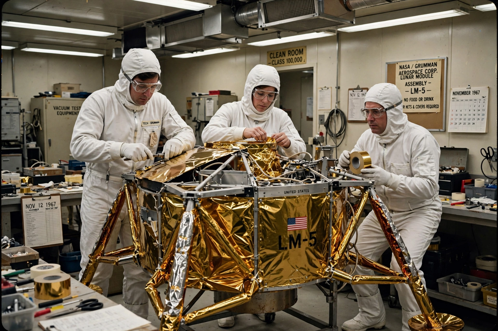

Grumman
From Wikipedia, the free encyclopedia
| Grumman | |
|---|---|
| Founded | 1929 (Leroy Grumman) |
| Headquarters | Bethpage, New York |
| Known in spaceflight for | Apollo Lunar Module |
| Fate | Merged into Northrop Grumman, 1994 |

Building the Lunar Module at Bethpage.Grumman Aerospace Corporation was a leading American aircraft and spacecraft manufacturer, founded in 1929 on Long Island, New York. To spaceflight history it is immortal for one product: the Apollo Lunar Module, the ungainly gold-and-black spacecraft, built at Bethpage, that landed twelve Americans on the Moon.
Grumman's LM contract (1962) made it the only prime contractor for a crewed spacecraft that could never be tested in Earth's atmosphere; its engineers under Tom Kelly delivered a machine that also proved itself as a lifeboat, saving the Apollo 13 crew in 1970. The company built 13 flight LMs.
Beyond Apollo
Grumman was simultaneously a pillar of naval aviation — the F-14 Tomcat among its aircraft — and built the Orbiting Astronomical Observatory satellites and parts of the Space Shuttle's wings. The 1994 merger with Northrop formed Northrop Grumman, which today builds the James Webb Space Telescope and the Lunar Gateway HALO module — a direct line of descent from the LM workforce.
See also
Apollo program · Apollo 13 · Northrop Grumman · Lunar Gateway